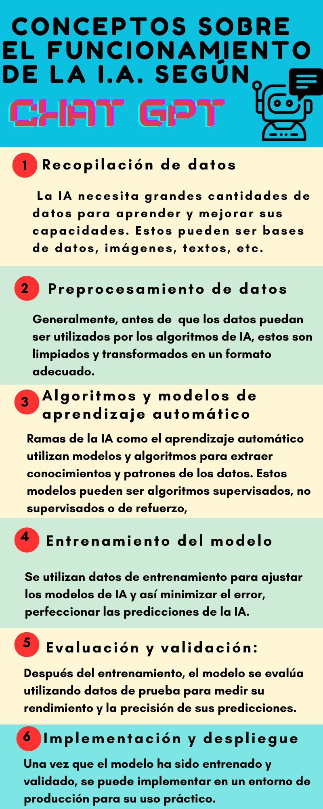

Tecnología - Inteligencia Artificial
I.A. en la educación: sin freno. Usos, problemas y desafíos.
¿La revolución educativa?: Cómo pueden las Inteligencias Artificiales llegar a transformar la educación, y qué repercusiones puede tener el cambio.
Es imposible pensar en los nuevos avances tecnológicos sin pensar en la inteligencia artificial. Es posible decir que casi todos nosotros hemos escuchado al menos una vez sobre esta herramienta o sus derivaciones como Chat GPT, Open AI, etc. Su desarrollo escala a pasos agigantados, y parece no tener freno. Como el hombre en 1969, la IA despegó y ya ha puesto sus pies en el comercio, en toda clase de trabajos y, ahora, en la educación. ¿Cómo aparece el fenómeno tecnológico en las aulas? Y, sobre todo, ¿cómo abordar su potencial en futuro en la enseñanza de los estudiantes?.
¿Qué es la Inteligencia Artificial y cómo funciona?
La inteligencia artificial o IA constituye una de las tecnologías más modernas y complejas de hoy en día. Según la empresa Google Cloud, la IA es un campo de la ciencia relacionado con la creación de máquinas y computadoras que puedan razonar, aprender y actuar de manera similar a la que lo haría un ser humano o involucrando una cantidad de datos superior a la capacidad humana. Abarca disciplinas como el análisis de datos y la estadística, la informática, la lingüística, la neurociencia, entre otros. Sus posibles usos son diversos: hoy miles de ramas de la actividad humana son asistidas o se desarrollan a través de la IA. Tal es el caso de la ingeniería, la medicina, el comercio, la administración de empresas y la educación en sus distintos niveles.
Para seguir leyendo
Tres expertos analizan cómo la inteligencia artificial transformará la educación y el mercado laboral De la inteligencia artificial al cambio climático, ¿qué agendas impactan en educación? Cómo y de qué forma se puede aplicar la Inteligencia Artificial a la educaciónSi bien existen distintas técnicas y enfoques, gran parte de las IA comparten puntos fundamentales en su funcionamiento. Según nos respondió el propio Chat GPT, estos conceptos comunes son los siguientes.
La IA en la educación, ¿cómo se podría usar?
Ya es evidente: la incorporación de la inteligencia artificial en las aulas ha abierto un nuevo mundo de posibilidades en la educación. Desde sistemas de tutoría virtual hasta plataformas de aprendizaje adaptativo, la IA está transformando la forma en que los estudiantes adquieren conocimientos y habilidades. Con algoritmos avanzados y capacidades de análisis de datos, las IA pueden proporcionar un aprendizaje personalizado, identificar las fortalezas y debilidades de cada estudiante y ofrecer recomendaciones específicas para mejorar su rendimiento académico.
Sin embargo, a medida que la inteligencia artificial se integra cada vez más en el ámbito educativo, también surgen desafíos importantes. Uno de ellos es la preocupación sobre la privacidad y la seguridad de los datos de los estudiantes. Las IAs recopilan una gran cantidad de información personal y de seguimiento del rendimiento, lo que plantea interrogantes sobre cómo se utilizan y protegen esos datos.
A pesar de estos desafíos, el potencial de la inteligencia artificial en la enseñanza de los estudiantes es prometedor. Las IAs tienen la capacidad de adaptarse y mejorar con el tiempo, lo que significa que pueden aprender de las interacciones con los estudiantes y ofrecer experiencias de aprendizaje más efectivas y personalizadas.
Casos generales
La inteligencia artificial (IA) desempeñó un papel fundamental en la asistencia educativa en el caso de Valeria Sarasols, una diseñadora industrial que utilizó la tecnología para diseñar una columna 3D para una cirugía en el Hospital de Niños de La Plata.
En este caso, la IA fue utilizada para procesar la tomografía computada de la paciente y realizar la segmentación de las vértebras solicitadas. Mediante el uso de diferentes softwares, se generaron mallas poligonales que representaban la anatomía de la columna de la paciente. Estos datos fueron exportados en un formato de archivo para ser impresos en una impresora 3D.
La IA también desempeñó un papel en el proceso de impresión 3D, permitiendo una reconstrucción tridimensional precisa de la columna en escala real. Esta réplica exacta de la anatomía de la paciente fue fundamental para planificar la cirugía con precisión y también podría tener aplicaciones en la fabricación de prótesis o yesos.
La utilización de la IA en este caso permitió una planificación más precisa de la cirugía, brindando a los cirujanos un mapa tridimensional detallado de la columna de la paciente. Esto ayudó a garantizar que la intervención quirúrgica se llevara a cabo de manera exitosa.
Este no es el primer caso en el que Valeria Sarasols ha utilizado la IA y la impresión 3D para apoyar intervenciones médicas. En 2019, fue reconocida por imprimir la réplica de la columna de otro paciente en el Hospital El Cruce. Su trabajo demuestra cómo la IA y la tecnología pueden ser herramientas poderosas en el ámbito de la medicina, permitiendo una planificación más precisa y contribuyendo al éxito de las cirugías.
El éxito de esta operación en el Hospital de Niños de La Plata es el resultado de la colaboración entre profesionales de la salud y la Facultad de Artes. La noticia del biomodelo realizado por Valeria Sarasols fue difundida con orgullo, destacando el impacto positivo de la tecnología y la IA en el campo de la medicina y la educación.
Un caso presentado por la fundación Utopia, muestra la aplicación de un asistente basado en IA aplicado en escuelas de Chile:
"El país vecino es uno de los pioneros en implementar IA en las aulas. En 2016 comenzó a utilizar un asistente educativo centrado en ciencias y lengua llamado Brainy. Al principio este proyecto sólo se utilizaba en ocho instituciones educativas y estaba dirigido a niños de entre 10 y 12 años. Luego se sumaron varios colegios, alcanzando a más de 50.000 alumnos en sólo dos años. El objetivo de este sistema, que está basado en la tecnología Watson de IBM, es que el programa pueda responder a las necesidades que cada niño identificando su perfil. Para lograrlo, Brainy maneja el historial y rendimiento de cada estudiante y puede identificar sus fortalezas y debilidades. Además, cuenta con una base de conocimiento alimentada con diferentes fuentes de datos como enciclopedias digitales, textos escolares y portales educativos. También incluye información pública sobre planes y programas del gobierno en materia educativa; y datos privados como el contenido pedagógico y toda la información del alumno disponible en el colegio"
¿Cuáles son las ventajas y desventajas de la aplicación de la IA en el ámbito educativo?
La implementación de la inteligencia artificial en el ámbito educativo presenta tanto ventajas como desventajas. En cuanto a las ventajas, la personalización del aprendizaje es una de las más destacadas. La IA permite adaptar el contenido y la experiencia de aprendizaje a las necesidades individuales de cada estudiante, lo cual facilita una educación más personalizada y efectiva. Además, las herramientas basadas en IA, como los sistemas de tutoría inteligente, proporcionan retroalimentación instantánea y apoyo individualizado a los estudiantes, lo que les ayuda a mejorar su aprendizaje de manera más eficiente. Otra ventaja es el acceso a recursos educativos. La IA puede recomendar y brindar acceso a una amplia gama de recursos educativos, lo que permite a los estudiantes explorar y aprender más allá de los límites tradicionales del aula. Asimismo, la automatización de tareas repetitivas y administrativas mediante la IA puede mejorar la eficiencia y la productividad de los docentes. Esto les permite centrarse en actividades de mayor valor, como la interacción con los estudiantes y el diseño de experiencias de aprendizaje más enriquecedoras.
Además, las tecnologías de realidad virtual y aumentada, impulsadas por la IA, ofrecen experiencias de aprendizaje inmersivas y envolventes. Estas experiencias pueden mejorar la comprensión y retención de los conceptos por parte de los estudiantes.
Sin embargo, también existen desventajas asociadas a la implementación de la IA en educación. Una de ellas es el riesgo de sustitución de docentes. Algunas personas expresan preocupación de que la IA pueda reemplazar a los docentes en ciertas tareas, lo cual podría afectar negativamente la interacción humana y la calidad de la educación. Es importante destacar que, aunque la IA puede ser una herramienta útil, no puede reemplazar completamente el papel fundamental de los docentes en el proceso de enseñanza y aprendizaje.
Otra desventaja es la posible generación de desigualdades. Si no se garantiza un acceso equitativo a la tecnología y a las herramientas basadas en IA, podría aumentar la brecha entre aquellos que tienen acceso y aquellos que no, generando desigualdades en la educación. Es necesario abordar este desafío para asegurar que todos los estudiantes tengan las mismas oportunidades de aprendizaje.
Además, existe el riesgo de que la dependencia excesiva de la IA pueda llevar a la pérdida de habilidades humanas importantes, como el pensamiento crítico, la resolución de problemas y la creatividad. Si los estudiantes dependen exclusivamente de la IA y no desarrollan estas habilidades, podrían enfrentar dificultades cuando no tengan acceso a la tecnología o se encuentren en situaciones donde la IA no pueda proporcionar respuestas claras.
También, si bien IAs como ChatGPT pueden proporcionarnos respuestas instantáneas a nuestras dudas, debido a su falta de aprendizaje y su relativa aparición reciente, puede ser que la solución entregada por la Inteligencia Artificial carezca de precisión.
Por otra parte, el uso de IA puede influir positivamente en el proceso de aprendizaje de los alumnos al permitirles mejorar sus habilidades de escritura y gramática. La Inteligencia Artificial también puede aplicarse al aprendizaje de idiomas extranjeros para los alumnos, al interactuar con la IA y crear la simulación de una conversación entre personas, permitiendo desarrollar la pronunciación, gramática y vocabulario del estudiante.
Existen diferentes puntos de vista respecto a las ventajas y desventajas de la implementación de la inteligencia artificial (IA) en el ámbito educativo.
Desde el punto de vista de los defensores de la IA en la educación, las ventajas son considerables. Argumentan que la personalización del aprendizaje facilitada por la IA permite atender las necesidades individuales de los estudiantes de manera más efectiva. Esto puede conducir a un mayor compromiso, motivación y éxito académico. Además, la retroalimentación y el apoyo individualizados brindados por las herramientas de IA pueden acelerar el proceso de aprendizaje y ayudar a los estudiantes a superar obstáculos más rápidamente.
Te puede interesar
La espectacular predicción de Bill Gates sobre la Inteligencia Artificial que cambiará la educación para siempre Inteligencia Artificial y los desafíos para la educación La inteligencia artificial en la educación: La creatividad pareciera ser la respuesta a este nuevo mundo en el que nos toca vivirLa accesibilidad a recursos educativos es otro aspecto resaltado por los defensores de la IA. Argumentan que la IA puede brindar acceso a una amplia gama de materiales y fuentes de conocimiento, rompiendo las barreras tradicionales de tiempo y espacio. Esto permite a los estudiantes explorar temas de interés de manera más profunda y ampliar sus horizontes educativos.
En términos de eficiencia y productividad, los defensores sostienen que la automatización de tareas administrativas y repetitivas a través de la IA libera tiempo para que los docentes se enfoquen en actividades de mayor valor pedagógico, como la interacción con los estudiantes y la creación de experiencias de aprendizaje más enriquecedoras. Esto puede llevar a un mejor aprovechamiento del tiempo en el aula y a una mejora en la calidad de la enseñanza.
Además, los defensores de la IA destacan el potencial del aprendizaje inmersivo proporcionado por las tecnologías de realidad virtual y aumentada. Argumentan que estas experiencias inmersivas pueden aumentar la comprensión y retención de los conceptos al involucrar a los estudiantes en entornos virtuales interactivos y realistas.
Por otro lado, los críticos de la IA en la educación plantean preocupaciones importantes. Uno de los puntos de vista críticos se centra en el riesgo de sustitución de los docentes. Argumentan que la IA no puede reemplazar la interacción humana y la conexión emocional que los docentes brindan a los estudiantes. La relación de confianza, la empatía y el apoyo emocional que los docentes proporcionan son aspectos fundamentales del proceso de aprendizaje que la IA no puede replicar por completo.
Asimismo, los críticos advierten sobre la posibilidad de que la implementación desigual de la IA genere desigualdades en la educación. Si no se garantiza un acceso equitativo a la tecnología y a las herramientas de IA, los estudiantes de entornos desfavorecidos podrían quedarse rezagados y enfrentar mayores barreras en su educación.
En cuanto a la pérdida de habilidades humanas, los críticos argumentan que una dependencia excesiva de la IA puede limitar el desarrollo de habilidades como el pensamiento crítico, la resolución de problemas y la creatividad. La capacidad de los estudiantes para cuestionar, analizar y generar ideas originales puede verse comprometida si se confían exclusivamente en las respuestas proporcionadas por la IA.
En resumen, los distintos puntos de vista respecto a las ventajas y desventajas de la IA en la educación reflejan una diversidad de opiniones. Mientras que los defensores destacan la personalización del aprendizaje, la eficiencia y el acceso a recursos educativos, los críticos enfatizan la importancia de la interacción humana, la igualdad de acceso y el desarrollo de habilidades humanas. Para aprovechar al máximo la IA en la educación, es fundamental abordar estas preocupaciones y buscar un equilibrio entre el uso de la tecnología y el papel esencial de los docentes en el proceso de enseñanza y aprendizaje.
Ética del uso y desafíos en la educación
El amplio desarrollo que ha adquirido la IA ha llevado a las personas a pensar en la ética de su uso. A pensar si las nuevas herramientas transgreden, de alguna manera, derechos, valores o capacidades humanas en todos los campos. Y la educación no es la excepción. En efecto, han ido apareciendo problemas “éticos” y morales a medida que se fueron implementando estas tecnologías.
Para adentrarnos en la relación entre la ética y la IA, decidimos consultar a Emiliano Costa, profesor de Filosofía de 6to Año del Colegio San José de La Plata. En primer lugar, tras preguntarle acerca de la eticidad en el uso de la IA, Costa explicó: “Lo principal es que la IA está desarrollada por seres humanos y es fruto de las acciones humanas. No es algo que se desarrolle e incluso que se pueda aplicar fuera del accionar humano. Por ende, la implicancia de la IA en la vida humana es sumamente ética.”
Luego, destacó que el desarrollo de las tecnologías de IA conlleva “una gran carga ética, lo cual también genera una responsabilidad social.” “El buen uso de la IA, éticamente hablando, denota responsabilidad social al igual que su mal uso. Por ejemplo, el Chat GPT posee una responsabilidad humana, no podemos dejar que eso se descontrole.” agregó.
“En la educación la inteligencia artificial puede ser beneficiosa en tanto sepamos utilizarla. Es importante saber usarla como herramienta y saber utilizar nuestras propias capacidades para sacarle provecho” - marcó Emiliano.
La implementación de tecnologías de IA en los últimos años no solo ha ayudado al sector educativo sino que también ha expuesto y proyecta ciertas problemáticas. Presenta aspectos que “rompen” con los límites del sistema tradicional de aprendizaje, para bien y para mal. A la vez, ponen en tela de juicio si son moralmente correctos o no, y abren debates éticos sobre el avance de estas herramientas. Entre las principales problemáticas de índole ética, encontramos la dependencia estudiantil, el fraude o plagio en trabajos, la limitación en la educación y la sustitución de los docentes.
Estas problemáticas y, en general, el avance de la inteligencia artificial significan un “desafío” para los profesores de escuelas de todos los niveles educativos. Los docentes deben adaptarse a estas herramientas y desarrollar la educación teniendo en cuenta su existencia.
Respecto a la situación, Lorena Bolaños, profesora de inglés interesada y atravesada por el tema, comentó en entrevista: “Hoy en día la IA y sus matices están instalados como parte del proceso de aprendizaje, en todos los niveles. Es inevitable, y el avance va a ser cada vez mayor.” Sin embargo, explicó que para ella, “eso no puede ser lo único”, y que en un contexto en el que los alumnos tienen a disposición una gran cantidad de información, “los educadores debemos “aggiornarnos” y plantear nuevas maneras de educación.”
“Cada vez la IA va a tener más influencia, sin dudas. Pero esa forma de aprender sin debate ni pensamientos críticos de los alumnos y profesores no serviría. No tendría sentido.” afirmó Lorena respecto a una posible educación brindada a través de sistemas con IA.
“Hoy estar en el aula es un desafío”
“Entonces, el gran desafío es el qué vamos a hacer para buscar otra manera de explicar, de plantear desafíos y propuestas para resolver que sean más interesantes o diferentes a lo que puedan alcanzar estas herramientas”, señaló.
“Otra gran tarea también es formar docentes que sepan que estas herramientas existen, que sepan usarlas y que sepan que los chicos las van a usar, y que planteen otras cosas otros desafíos. Hoy estar en un aula es un desafío.”, sentenció.
¿Qué opinan los profesores y estudiantes?
¿IA sí, IA no? En efecto, quienes finalmente van a decidir o, aunque sea, poner en práctica el uso de inteligencias artificiales en las aulas son sus protagonistas. Tanto profesores como alumnos son y van a ser los responsables de aplicar o no estas herramientas.
En colegios y universidades de todo el mundo las opiniones y percepciones son distintas. Sin embargo, por lo general, el sector estudiantil se muestra a favor del uso de herramientas como Chat GPT en muchos aspectos. Y, por otro lado, gran parte del profesorado rechaza o toma con pinzas el uso de este tipo de herramientas en las aulas.
Un estudio presentado por la organización Proyecto Logos, en el que se entrevistó a 87 estudiantes universitarios, muestra la percepción que tienen los mismos respecto al uso de Chat GPT. Los resultados destacaron que los alumnos ven al chatbot como una herramienta útil y rápida, a la que pueden recurrir para solucionar preguntas simples y orientar la realización de sus trabajos. También marcaron que presenta beneficios como la asistencia escolar desde casa y la mejora del trabajo en grupo.
Sin embargo, los estudiantes consultados también explicaron que la plataforma presenta limitaciones como la formulación de respuestas inexactas o muy complejas, y la falta de comprensión de textos muy específicos. Además, plantearon que algunos de sus compañeros la utilizaban para copiarse y, el 43.5% marcó que el profesorado estaba preocupado por el uso de la herramienta.
Para averiguar cómo se ve a estas tecnologías en la educación local, encuestamos a 27 estudiantes y 9 profesores de La Plata y los alrededores. A ambos grupos les hicimos 2 preguntas, a las cuales respondieron sí o no: ¿Creen que en un futuro la educación se va a dar a través de la IA o, al menos, con una gran influencia de la misma? Y, en ese caso, ¿les gustaría? ¿Se sentirían cómodos con esa manera de aprender/enseñar?
Los resultados se plasman a continuación:¿Creen que en un futuro la educación se va a dar a través de la IA o, al menos, con una gran influencia de la misma?
En ese caso, ¿Les gustaría? ¿Se sentirían cómodos con esa manera de enseñar/ aprender?
Las respuestas obtenidas fueron, como esperábamos, muy diversas. Frente a la primera pregunta, las opiniones de los estudiantes son equiparadas. Por otro lado, en el profesorado, consciente del avance de la tecnología, se ve una mayor inclinación a que, efectivamente, las IA van a tener una gran influencia en la educación. Sin embargo, en un par de respuestas los docentes sostuvieron que esta involucración de la IA no va a ser total . Es decir, va a tener importancia, pero la educación no va a depender de ella.
En cuanto a la segunda pregunta, la mayor parte del alumnado encuestado expresó que no le gustaría ni se sentiría cómodo aprendiendo bajo un sistema regido por la IA. Además, dos de los 27 estudiantes sostuvieron que veían un lado positivo y un lado negativo en esta cuestión. Uno de ellos, Enzo Peluso, estudiante del Colegio Liceo Victor Mercante, explicó que “en parte sí y en parte no, ya que puede ocurrir que la IA esté siendo manipulada y no me enseñe correctamente”.
Por el lado de los profesores, nuevamente fueron mayoría aquellos que se mostraron a favor. Sin embargo, casi todos los que afirmaron que les gustaría educar con una gran influencia de inteligencia artificial mostraron una preocupación común. Y es que, se mostrarían a favor “siempre y cuando la IA sea bien usada y no desplace al docente” , como dijeron las profesoras de matemática del Colegio San José Lourdes Salas y Paola Hergenreder.